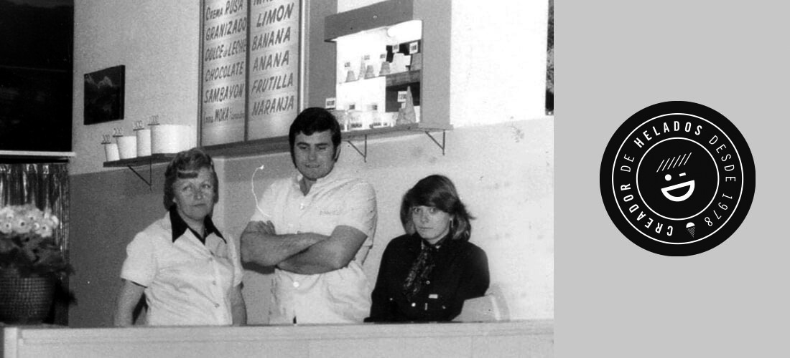
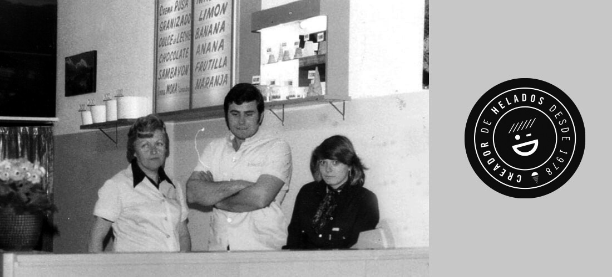

Daniel nacio en Victoria, San Fernando.Un pequeño barrio de zona norte.
Su primer trabajo fue en una heladeria barrial añorada por todos los san fernandinos, donde paso sus veranos.
APRENDIENDO EL OFICIO DE MAESTRO HELADERO
Daniel se prometió a si mismo que un día iba a crear una heladeria para sus amigos, y si era para ellos:tenían que ser BUENOS y a PRECIOS ACCESIBLES.
Su promesa se hizo realidad en 1978 cuando abrio su primer heladería en un pequeño garage de su barrio.
Le puso DANIEL (nada de nombres raros).
Rápidamente se hizo famoso y el local se llenaba porque cumplió con su palabra.
Su ingenio, el lanzamiento de nuevos sabores y la calidad de excepción, hizo que sus vecinos lo premiaran y hasta lo hicieron famoso en otros barrios muy cercanos de la zona norte, a donde llevaron la marca de boca en boca.